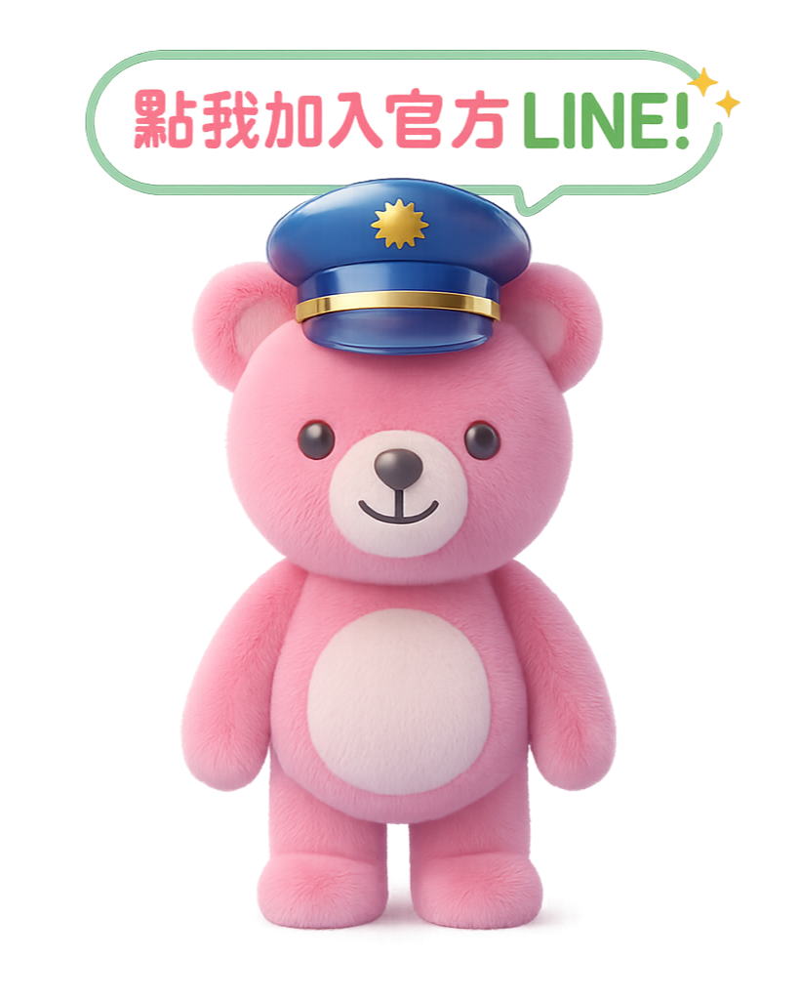

一般民眾：收到陌生投資邀請
不用下載新 App，直接在 LINE 上傳截圖，先判斷對話是否藏有高風險話術。
- 需求快速查證陌生訊息
- 情境投資群組、交友邀約、假客服通知
- 期待用白話提醒下一步怎麼做
Everyday Safety
關於我們
獲獎肯定、攜手公私部門，共同打造更安全的數位環境。
不用下載新 App，直接在 LINE 上傳截圖，先判斷對話是否藏有高風險話術。

親切角色降低詢問門檻，讓家人提醒不再只靠口頭叮嚀，而是有工具能即時輔助。

透過風險分級與摘要，讓學生理解詐騙話術如何一步步取得信任與要求轉帳。

員工遇到假客服、釣魚訊息或冒名主管時，可先用截圖取得風險提醒。

搭配地方宣導、長者服務與社區課程，協助高風險族群在關鍵時刻停下來。
使用方式
民眾可從手機直接加入服務，學校與單位也能放入宣導教材或內部公告。
將陌生訊息、交易邀約、投資群組或假冒通知截圖傳給小幫手。
AI 回覆風險等級、可疑線索、建議處置方式，協助使用者先停、看、查。
風險判讀
AI 分析結果可依風險程度提示，讓第一線宣導與使用者溝通更清楚。
 Level 1：暫無異狀
Level 1：暫無異狀
 Level 2：低度風險
Level 2：低度風險
 Level 3：中度風險
Level 4：高度警戒
Level 5：極度危險
Level 3：中度風險
Level 4：高度警戒
Level 5：極度危險
志工媽媽招募
隨著 AI 技術快速發展，詐騙手法也變得更加逼真，從假冒親友、假投資，到深偽（Deepfake）影像與聲音，孩子越早建立正確的防詐觀念，就越能降低受騙風險。
我們希望透過「志工媽媽校園宣導計畫」，培訓熱心家長與志工走進校園，以貼近孩子的方式，陪伴他們學習辨識常見詐騙手法，建立正確的數位安全觀念。
不需要具備防詐背景，只要願意學習、樂於分享，我們都歡迎您的加入。完成培訓後，即可成為校園防詐宣導志工。
目前校園防詐宣導持續推動中，但若有更多經過培訓的志工加入，便能讓更多班級、更頻繁地接觸到防詐教育，讓防詐觀念真正融入孩子的日常生活。
每一次分享，都可能幫助一位孩子避免成為下一位受害者。
